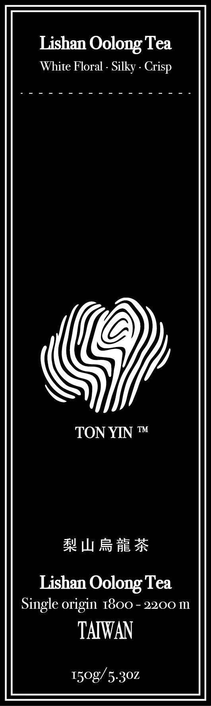
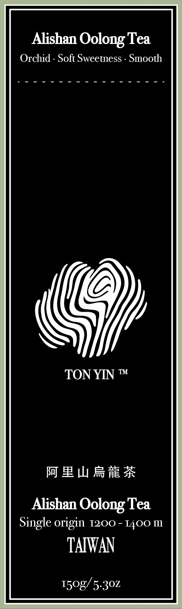
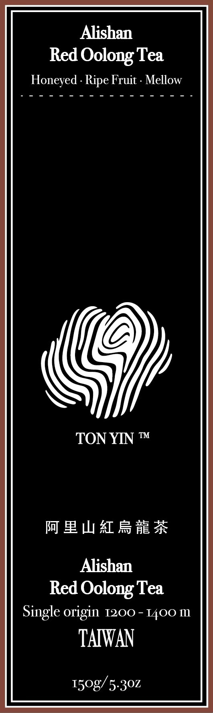
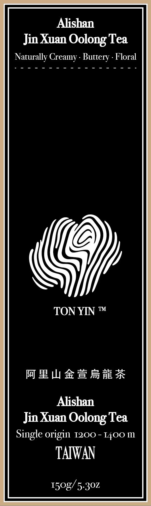
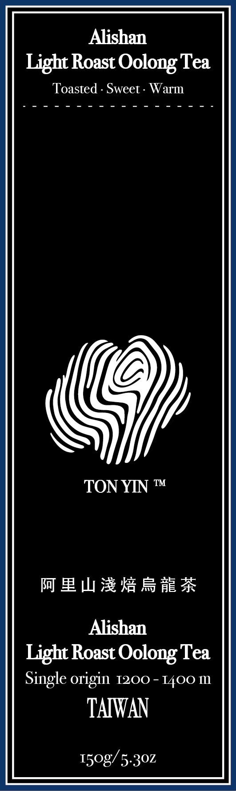

Lishan Oolong Tea
梨山烏龍茶
White Floral · Silky · CrispSingle origin · 1800–2200 m · 150 g / 5.3 ozTON YIN™ · 堂印
A mark shaped by the hands of a tea roaster, the patience of time, and Taiwan's mountains.
Discover the mark ↓THE MARK
TON YIN is built around 李宏堂, a tea roaster with more than 30 years of experience and known in the tea trade as ‘Tang-Ge.’ Over the years, he has walked Taiwan's tea mountains and built his judgment through practice.
‘印’ is the trace left after a tea passes through his hands, experience and judgment. It is also TON YIN's idea of quality: rare tea should carry a mark that means something.
A LIFE IN TEA
For Li Hung-Tang, tea is understood through the senses: the aroma held in the leaf, the character shaped by fermentation, and the balance revealed over time. More than 30 years of roasting have turned close attention into quiet, assured judgment.
Meet the craftsman behind the mark.
THE CRAFTSMAN
TON YIN is not built on decoration or volume. Its center is the roaster's attention — to aroma, finish, balance and time — and the human connection to the land where the tea begins.
THE COLLECTION
Five distinct profiles, each presented with its origin, elevation and tasting notes.

梨山烏龍茶
White Floral · Silky · CrispSingle origin · 1800–2200 m · 150 g / 5.3 oz
阿里山烏龍茶
Orchid · Soft Sweetness · SmoothSingle origin · 1200–1400 m · 150 g / 5.3 oz
阿里山紅烏龍茶
Honeyed · Ripe Fruit · MellowSingle origin · 1200–1400 m · 150 g / 5.3 oz
阿里山金萱烏龍茶
Naturally Creamy · Buttery · FloralSingle origin · 1200 m · 150 g / 5.3 oz
阿里山淺焙烏龍茶
Toasted · Sweet · WarmSingle origin · 1200–1400 m · 150 g / 5.3 ozBREWING GUIDE
Hot or cold, let time reveal the character of the leaf.
95°C / 203°F
6 g · 300 ml / 10 fl oz
3–5 min
Re-infuse 3–5 times
Room-temperature water
5 g · 500 ml / 17 fl oz
Refrigerate 10–12 hr
TAIWAN · UNITED STATES
For product availability, partnership or distribution inquiries in Taiwan and the United States, please contact WooHua directly.